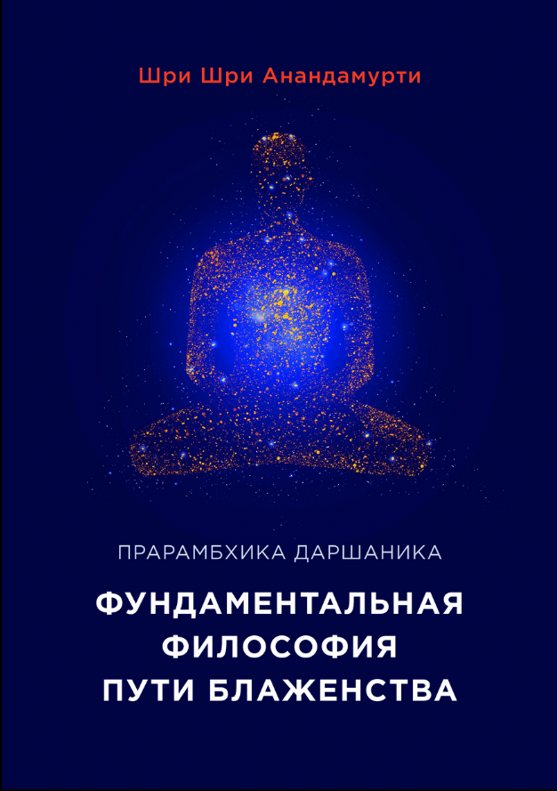
Эта книга была первой публикацией из более чем 250 книг современного индийского ученого и философа Прабхата Ранджана Саркара (Шри Шри Анандамурти). Она остается одним из наиболее важных трудов, раскрывающих философию Мастера. С помощью формальной простой логики убедительно доказывается существование высшего Сознания, Творца Вселенной, и говорится о необходимости духовной практики для прогресса человечества. Даются ответы на важнейшие вопросы: «Что такое Бог? Кто я? Каковы мои взаимоотношения со Вселенной? Как люди должны жить в этом мире?»
450 ₽


Чарьячарья — это самаджа-шастра (социальный трактат) «Ананда марги». Три части излагают как организационную, так и психическую и культурную основу движения «Ананда марга». В части 1 автор не только рассказывается о структуре «Ананда марги», о ее управляющих советах и комитетов, но также даются рекомендации для различных социальных событий – от приветствия прихода в жизнь крошечного младенца до празднования весны, церемонии вхождения в дом и поминовения умерших.
150 ₽

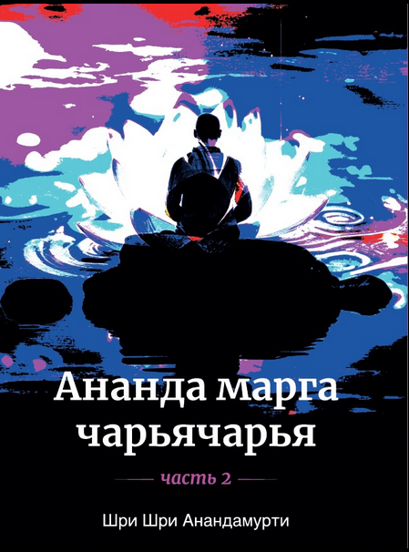
Чарьячарья — это самаджа-шастра (социальный трактат) «Ананда марги». Три части излагают как организационную, так и психическую и культурную основу движения «Ананда марга». В части 2 описаны правила личного и социального поведения в прогрессивном обществе, то есть в обществе, где все идут по пути, ведущему к реализации высшей цели человеческой жизни – постижению Высшего.
150 ₽

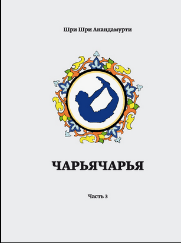
Книга содержит рекомендации, относящиеся к психофизическому здоровью, которые должны соблюдаться также для прогресса в психической и духовной сферах. Автор рассказывает о йогических позах (асаны) и других практиках для всестороннего здоровья. Он подчеркивает, что в дополнение к инструкциям, изложенным в книге, для практики асан необходим компетентный учитель.
350 ₽

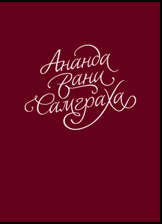
Ананда Вани самграха – «сборник благостных посланий» Шри Шри Анандамурти выступал перед своими учениками с особыми посланиями по случаю Нового года и своего дня рождения. Книга представляет собой сборник этих вдохновляющих посланий, данных Мастером с 1956 по 1990 годы.
150 ₽

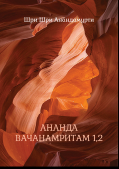
Серия книг «Ананда вачанамритам» («Божественные беседы») объединяет все известные даршаны, которые давал реализованный Мастер, индийский ученый и философ Прабхат Ранджан Саркар (Шри Шри Шри Анандамурти). Беседы велись с последователями «Ананды марги», когда Мастер посещал различные места в Индии и в других странах. Иногда спонтанные, эти беседы были более короткими и простыми, чем запланированные лекции, и, как правило, в них участвовали небольшие группы последователей. Но такие беседы оказывались не менее глубокими по своему значению, чем длинные лекции, которые давались на дхармамахачакрах. Вот некоторые из раскрытых в книгах тем: «От животного состояния к божественности», «Энергия и познание», «Освобождение от Вишнумайи», «Суеверия о смерти», «Тантра – это садхана, а садхана – это тантра», «Мантра и заклинание», «Место женщин в духовном мире», «Слава человеческой дхармы», «Высшее бытие», «Ступени самадхи».
300 ₽

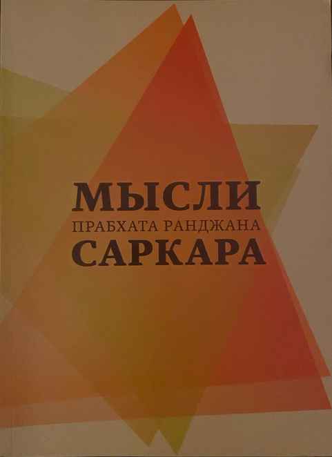
Серия книг «Ананда вачанамритам» («Божественные беседы») объединяет все известные даршаны, которые давал реализованный Мастер, индийский ученый и философ Прабхат Ранджан Саркар (Шри Шри Шри Анандамурти). Беседы велись с последователями «Ананды марги», когда Мастер посещал различные места в Индии и в других странах. Иногда спонтанные, эти беседы были более короткими и простыми, чем запланированные лекции, и, как правило, в них участвовали небольшие группы последователей. Но такие беседы оказывались не менее глубокими по своему значению, чем длинные лекции, которые давались на дхармамахачакрах. Вот некоторые из раскрытых в книгах тем: «От животного состояния к божественности», «Энергия и познание», «Освобождение от Вишнумайи», «Суеверия о смерти», «Тантра – это садхана, а садхана – это тантра», «Мантра и заклинание», «Место женщин в духовном мире», «Слава человеческой дхармы», «Высшее бытие», «Ступени самадхи».
300 ₽

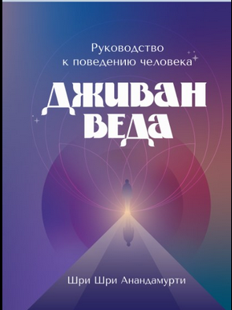
В этой книге автор по-новому освещает принятые в обществе морально-нравственные принципы (джама и нияма) и показывает, что у этих принципов есть прочная научная основа. Читатель узнаёт, что древние учения о самоконтроле и бескорыстном поведении основываются на самом глубоком понимании человеческой психологии и являются ключами к проявлению у людей высших способностей.
220 ₽


Прабхат Самгит (в переводе с санскрита — «Песни нового рассвета») — это собрание из 5018 духовных песен, созданных Шри Шри Анандамурти. Эти песни охватывают широкий спектр возвышенных тем. В них сочетаются духовная поэзия, философская глубина и эмоциональная выразительность. Прабхата Самгиты помогают соединить чувства и разум, пробуждают интуицию, придают силу на духовном пути. Их часто называют «музыкой души», потому что они помогают выразить то, что словами не передать.Это особая форма выражения чувств, глубоких переживаний духовного искателя на его пути.
450 ₽

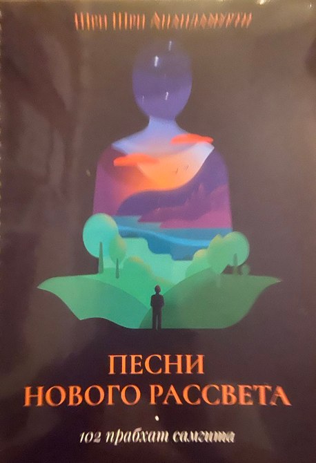
Прабхат Самгит (в переводе с санскрита — «Песни нового рассвета») — это собрание из 5018 духовных песен, созданных Шри Шри Анандамурти. Эти песни охватывают широкий спектр возвышенных тем. В них сочетаются духовная поэзия, философская глубина и эмоциональная выразительность. Прабхата Самгиты помогают соединить чувства и разум, пробуждают интуицию, придают силу на духовном пути. Их часто называют «музыкой души», потому что они помогают выразить то, что словами не передать.Это особая форма выражения чувств, глубоких переживаний духовного искателя на его пути.
450 ₽

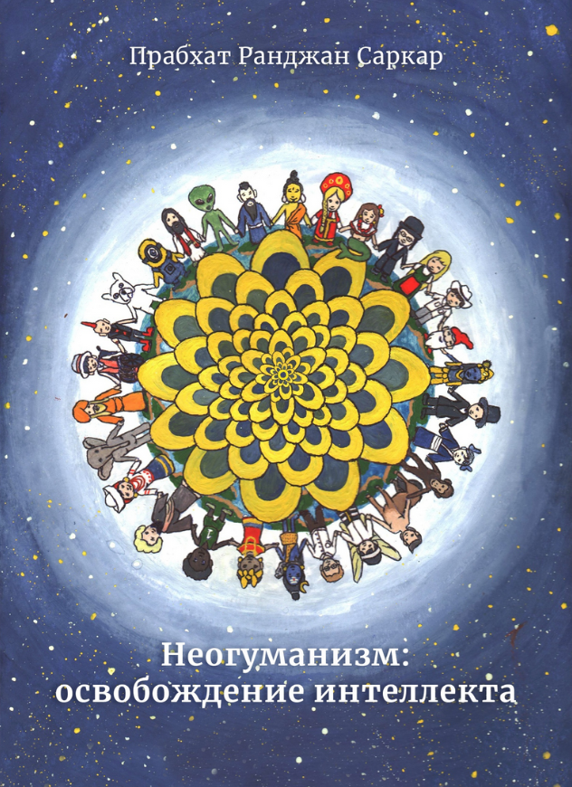
Книга представляет собой сборник бесед о неогуманизме, целостной философской теории, разработанной индийским философом и ученым Прабхатом Ранджаном Саркаром. В философии Мастера универсализм играет ключевую роль. Гуманизм, как правило, охватывает только человеческую сферу, но неогуманизм является расширением гуманизма до универсализма и говорит о служении всем существам этого мира – и живым, и неживым.
350 ₽

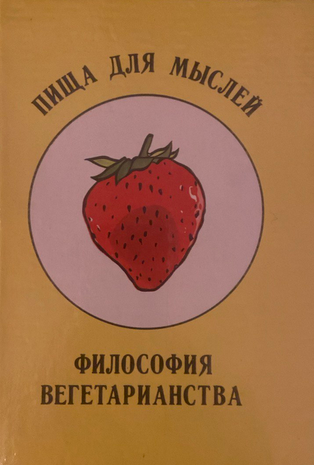
Книга раскрывает ключевые идеи о тантрической йоге, неогуманизме и духовной самореализации через медитацию и нравственные принципы.
150 ₽

7000 лет назад в величественных Гималаях жил великий йогин Садашива, который дал людям знания, необходимые для создания мировой цивилизации, в области искусства, музыки, точных наук, медицины, языка, ввел социальные нормы, институт брака и систематизировал основные физико-психические и психодуховные практики тантра-йоги. Садашива усовершенствовал тантру, таинственную эзотерическую науку, и обучил ей тех, кто хотел идти путем самодисциплины и работать над повышением благосостояния общества. В двадцатом веке индийский ученый и философ, реализованный Мастер Прабхат Ранджан Саркар адаптировал эту древнюю науку к современности. Книга рассказывает о том, как эти проверенные временем практики раскрывают потенциал и преобразуют людей на всех трех уровнях существования: физическом, психическом и духовном.
300 ₽


«Ananda Sutram» – это книга афоризмов, раскрывающих вопросы происхождения и развития Вселенной, суть нашей реальности. Это один из фундаментальных трудов, написанный Шри Шри Анандамурти (философ и ученый П.Р. Саркар). Сутра – это краткое высказывание, имеющее высокодуховное философское содержание. Сутру можно сравнить с афоризмом. На протяжении многих веков мудрецы пользовались сутрами, чтобы с их помощью передавать сложные философские понятия в лаконичной, хорошо запоминающейся форме. Буквально sutra означает «нить»; эта нить способна соединить собой множество объектов и вплестись в другой узор. Ananda переводится как «божественное блаженство» – экстатическое состояние, глубоко личный опыт, переживаемый не в результате внешнего чувственного воздействия, но как внутренний опыт пребывания сознания в высших сферах. Диди Ананда Митра Авадхутика написала «Комментарии к Ананда сутрам». В этой книге каждой сутре дан пословный перевод, а также достаточно подробные объяснения, которые помогают глубже проникнуть в смысл сутр и открыть их новые грани.
700 ₽

Согласно древнейшим представлениям йоги и новейшим физическим теориям бытие — это не единственная реальность, а некоторый континуум взаимопроникающих пластов бытия. Начинается он с самого грубого и плотного — физического пласта, далее идут различные пласты, последний из которых называют «духом», или «душой». По мере восхождения вдоль этого континуума пласты становятся все «тоньше» и осознаются труднее. Бытие от тела до духа йоги разделили на пять пластов, или кош. Каждый последующий слой – более «тонкий», «возвышенный». Высшие слои представляют собой огромные хранилища энергии и знаний, и они оказывают сильное, но трудно ощутимое человеком влияние на нижние слои.
300 ₽


В книге описаны основные практики анандамарга-йоги: 6 уроков садханы, значение янтры – пратика, виды киртана, морально-нравственные принципы, мантры до и после медитации, базовые асаны, йогические танцы каушики и тандава и пр.
150 ₽

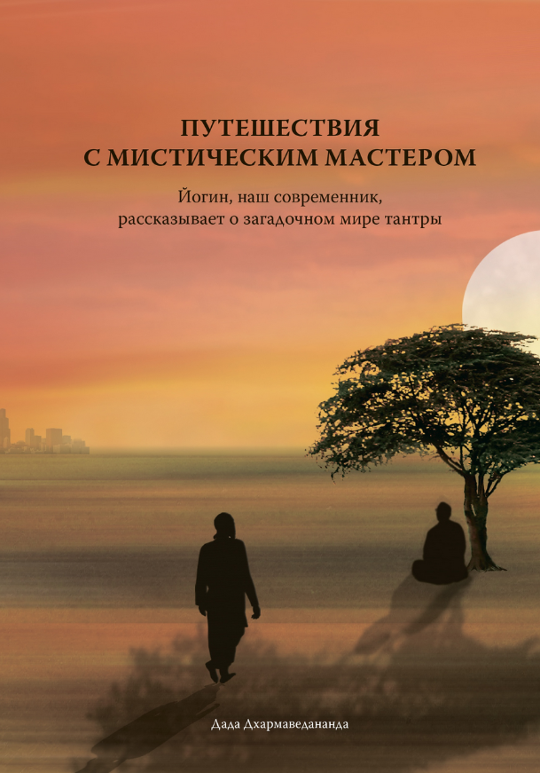
Эта книга полна вдохновляющих и поучительных историй. Я так увлекся, что прочитал их практически за одну ночь». – Роберт Блай, автор бестселлера «Железный Джон», победитель среди лауреатов Национальной книжной премии США в номинации «Поэзия». «С добротой, скромностью и юмором дада Дхармаведананда рассказывает историю монаха – нашего современника, чьим монастырем является весь мир, а практикой – служение этому миру. Книга вдохновляет и увлекает. Она очень честная и познавательная. Это правдивая и захватывающая история о духовном поиске». – Стив Бхаерман (Свами Бейондананда), автор известных мировых комедий на духовные темы и «серьезной» книги «Спонтанная эволюция» (с Брюсом Липтоном). «Достоверные хроники, временами смешные, на тему современного мистицизма… исследуют суть духовного развития, которая обычно скрыта от внешнего мира». – «New Renaissance».
750 ₽

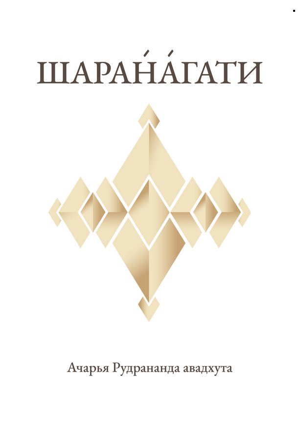
«Эта книга – очень содержательная история опытного практикующего интуитивную науку, который достиг высшей цели человеческой жизни. Его отношения со своим Гуру Шри Шри Анандамурти-джи, руководство и любовь Гуру позволили ему достичь этой цели. Истории – бесценный пример жизни человека, который может вдохновить любого, кто готов идти путем тантры. Очень важно также понимать философские основы учения, которое подчеркивает, что необходимо жить рационально. В последней главе книги говорится об истории, философии и практике тантры, а затем объясняется систематизация и привязка к современности этого древнего искусства, которые сделал Гуру движения «Ананда марга» Шри Шри Анандамурти-джи. Садхана (духовные практики) в «Ананда марге» основана на всестороннем научном подходе. В оригинальной версии этой книги на хинди глава о тантрической философии (Наука интуитивной практики – «Взгляд льва») находится в начале книги, и читатель, который искренне заинтересован в практике тантры, возможно, пожелает прочитать сначала последнюю главу, а затем приступит к историям об опыте дады, окруженном заботой любящего Гуру, на пути тантры».
650 ₽

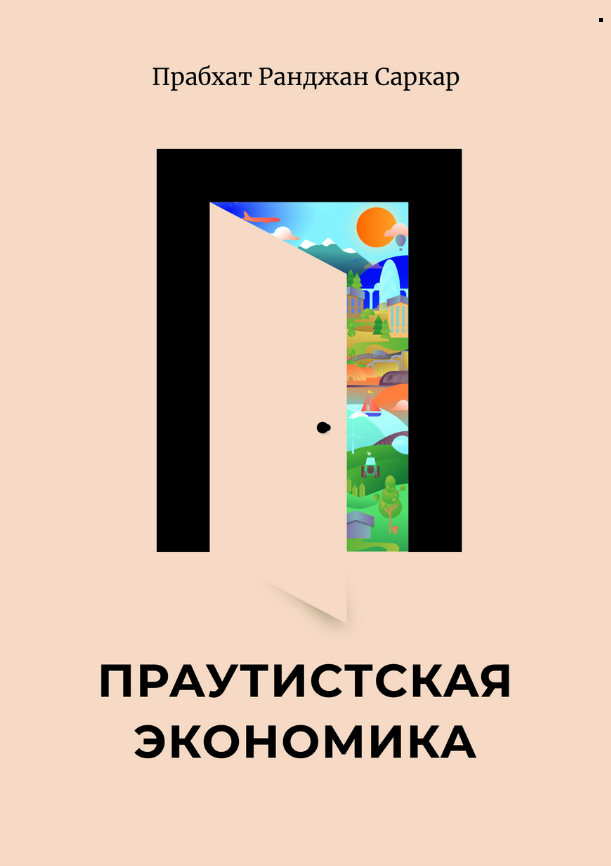
ПРАУТ (PROUT – Progressive Utilization Theory) – это новая экономическая система, являющаяся альтернативой всем имеющимся в мире экономическим теориям. Она основана на идее социальной справедливости ко всем в нашем мире и направлена на процветание всех существ, живущих на этой планете. В этой книге собраны лекции, которые автор давал разным группам людей. В лекциях: – обсуждаются основные принципы экономического освобождения, описаны основополагающие принципы праутистской экономической системы; – представлен краткий критический анализ основных на сегодняшний день мировых материалистических теорий – капитализма и коммунизма; – объясняется, как нужно структурировать сельское хозяйство, чтобы оно служило всеобщему благу; особый акцент делается на необходимость координированного сотрудничества в сельском хозяйстве; – описываются условия, необходимые для повышения уровня жизни местного населения в результате экономической децентрализации; – рассказывается об определенной политике, применив которую можно очень быстро уменьшить страдания угнетенных людей; – дается детальное описание тематических исследований северо-восточной Индии и многочисленные практические советы по повышению экономического уровня миллионов бедных людей, населяющих этот регион.
750 ₽

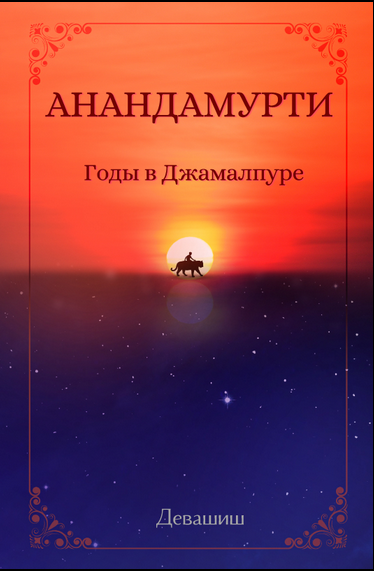
Наверно самым знаменитым духовным мастером Индии в конце двадцатого столетия был Саи Баба, но Анандамурти (Прабхат Ранджан Саркар) по сути стал её самой интересной и провокационной духовной фигурой. Кто-то считал его социальным революционером с тайными намерениями свержения индийского правительства, кто-то могущественным тантриком, обладающим сверхъестественными силами, но сам Анандамурти тщательно скрывал свою личность от общественного внимания на протяжении всей жизни. Он взаимодействовал с миром через «Ананда маргу», духовную и благотворительную организацию, которую он основал в 1955 году, а именно через её монахов в оранжевых одеждах, которых к концу 60-х годов стало настолько много в северной Индии, что их ежедневно упоминали в прессе того времени. Организация «Ананда марга» получила широкую известность, но сам Анандамурти оставался таинственной фигурой до самой своей смерти в 1990 году. Книга «Анандамурти: годы в Джамалпуре», основанная на рассказах учеников, коллег и семьи Мастера, пишет удивительный портрет этого неоднозначно воспринимаемого людьми святого и социального мыслителя. Это не столько академическое исследование жизни человека, сколько собрание зачастую необъяснимых историй о Мастере, оформленных в биографию, которая откроет читателю портал в загадочный мир индийского мистицизма, йоги и тантры.
1000 ₽

«Беседы о неогуманистическом образовании» – сборник лекций, прочитанных мыслителем и философом Шри Прабхатом Ранджаном Саркаром в течение 35 лет во второй половине XX века. Автор провозглашает основополагающие идеи образования, описывает пути и способы их реализации для прогресса человечества и построения справедливого, счастливого общества. Образование должно быть основано на универсалистских принципах неогуманизма и охватывать все сферы жизни – физическую, психическую, социальную, нравственную и духовную. О неогуманистической образовательной парадигме мало кто знает в современном мире, хотя это уникальная теория развития каждого человека в отдельности и общества в целом. Автор говорит о задаче воплощения в жизнь прогрессивной системы образования человечества и подробно раскрывает темы, прямо или косвенно относящиеся к выполнению этой задачи. В книге рассказывается, какими для этого должны быть искусство, история, наука, литература; продолжается разговор об установлении равновесия (прамы) в обществе; затрагивается тема идеологии нового поколения, взаимосвязи образования и неогуманизма, важности социальных ценностей; говорится о месте и роли садвипр в обществе; дается краткий лингвистический обзор происхождения мировых языков; рассказывается о процессе символизации воспринимаемой человеком информации. Определенное место в книге отведено теме биопсихологии йоги. Также вы узнаете о мирском и непреходящем знании, о пагубном влиянии догм на общество, о смене общественных циклов и о том, как можно построить счастливое, справедливое общество, где нет и не будет места для эксплуатации ни в одной сфере жизни. Это лишь некоторые темы из тех, которые затронуты в данной книге. Биопсихология, а также далеко идущее видение будущего и оптимистичный взгляд на развитие человеческого потенциала в сочетании с практическими соображениями о том, как наилучшим образом развить в себе имеющиеся знания, делают эту книгу важным дополнением к библиотеке педагогов и широкого круга читателей. «Учителя должны помнить, что ученики для них – будь то подростки, молодежь, старики или маленькие дети – это просто дети разного возраста; и что они сами такие же дети, как и их ученики. Если учителя дистанцируются от своих учеников или постоянно стремятся сохранить напускную серьезность, они не смогут установить любящие, сердечные отношения со своими учениками. Свободный и искренний обмен идеями просто невозможен, если нет чувства взаимной дружеской симпатии.» «Учителя должны нести ответственность за передачу знаний, прививать культуру сдержанности в социуме и разъяснять различные аспекты коллективной деятельности, а родителям нужно взять на себя бо́льшую часть ответственности за моральное и духовное воспитание ребенка.» Образование – это просто трансформация прежней структуры разума и перенаправление его к высшему уровню осознанности, к величественному духу Высшей Истины, к высшему состоянию реальности.
750 ₽

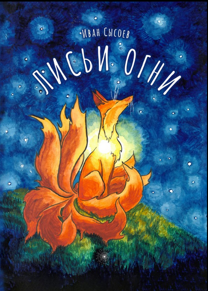
Подлинное волшебство – это единство. Настоящий волшебный огонь горит в сердце. И для того, чтобы услышать магию, нужно, чтобы тихо-тихо стало внутри. Эти и другие вещи любопытный маленький лисёнок узнаёт от своего прапрапрадеда–волшебника. “Лисьи огни” – это сказка–притча, иллюстрирующая важные идеи из философии йоги. Необычная и образная история будет интересна как детям, так и взрослым. Её дополняют красочные, забавные и теплые иллюстрации, выполненные от руки традиционными материалами. В конце книги Дада Садананда и Диди Ананда Дэваприя делятся техниками и играми, помогающими детям приобщиться к практике медитации. Книга предназначена для читателей от семи лет. Отзывы: Прекрасная трогательная сказка, я даже в каком-то месте прослезился (Дада Садананда). История про лисёнка дала мне вдохновение на две вещи: сразу же сесть медитировать и делать добрые дела. Я хочу, чтобы в мире было больше таких произведений! (Анандасваруп, младший монах) Необычно и очень здорово! Чувствуется, что автор душу вложил в работу. Заложено очень много глубокого смысла и доброты. Иллюстрации – огонь! Спасибо! (отзыв с ЛитРеса). Форматы: pdf.
350 ₽

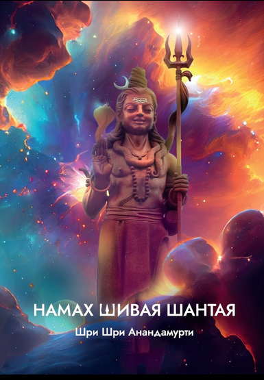
Человеческая культура и цивилизация не смогли бы существовать в том виде, в каком мы их знаем, а возможно и вовсе исчезли, если бы не Шива. Шива сыграл важную роль в развитии человеческого общества в сфере образования, медицины, во внедрении социальных норм, в области музыки, танца, в фонетике и, конечно же, в науке интуитивных практик. При всем этом Шива является особенной фигурой: «Сияющего в лучах собственной славы Шиву можно рассматривать как личность, стоящую вне человеческой культуры и цивилизации». В человеческой цивилизации, основанной Шивой, имя Мастера продолжает жить. Оно является неотъемлемой частью существования четвертой части населения Земли с младенчества и до финального занавеса. Тем не менее сведения о самой жизни этой великой личности были на долгое время утрачены, скрыты за множеством покрывал, сотканных из мифов. К примеру, многие поклоняются Шиве как Богу, однако не признают его как историческую личность. Шивокти и шивопадеши, данные Шивой, – поистине жемчужины, составляющие прекрасную гирлянду его учения. Автор книги «Намах Шивая шантая» – «Приветствие Шиве умиротворенному» – отодвигает завесу семи тысяч лет истории, чтобы показать Шиву как великого духовного мастера, как гуманиста и основоположника искусств и науки.
500 ₽


Чарьячарья — это самаджа-шастра (социальный трактат) «Ананда марги». Три части излагают как организационную, так и психическую и культурную основу движения «Ананда марга». В части 1 автор не только рассказывается о структуре «Ананда марги», о ее управляющих советах и комитетов, но также даются рекомендации для различных социальных событий – от приветствия прихода в жизнь крошечного младенца до празднования весны, церемонии вхождения в дом и поминовения умерших.
100 ₽

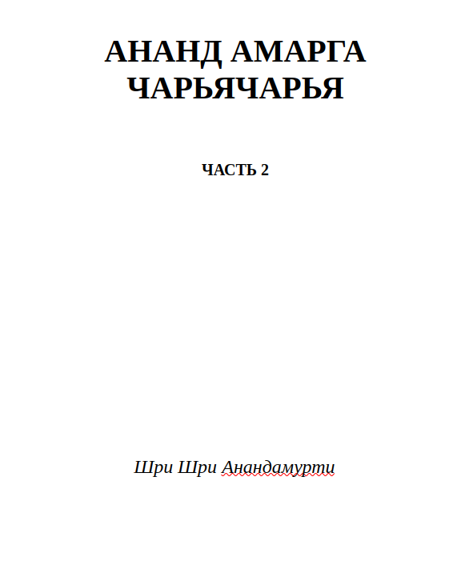
Чарьячарья — это самаджа-шастра (социальный трактат) «Ананда марги». Три части излагают как организационную, так и психическую и культурную основу движения «Ананда марга». В части 2 описаны правила личного и социального поведения в прогрессивном обществе, то есть в обществе, где все идут по пути, ведущему к реализации высшей цели человеческой жизни – постижению Высшего.
100 ₽

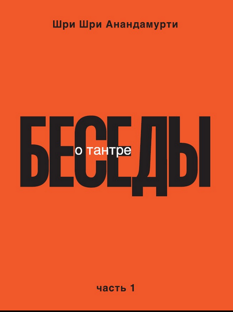
Индийский философ и мудрец XX века Шри Шри Анандамурти синтезировал панча-тантру [пять известных школ тантры] в единый культ, включив в него значимые особенности каждой из этих школ. Ананда марга – духовный культ, целью которого является достижение Высшего Сознания. В этом отношении культ является шиваитским; однако, чтобы подняться на высокий духовный уровень, нужна психическая и духовная сила, для обретения которой необходима надлежащая духовная практика – садхана. В этой книге вы познакомитесь с подробнейшей концепцией сотворения нашей Вселенной, узнаете, что нужно для того, чтобы, используя мантры, достичь цели человеческой жизни, которую определил всем существам Создатель. Очень интересен материал об акустических корнях каждой из человеческих наклонностей. Наверно это единственная статья, где автор немного глубже рассказывает о каждой из них. Вы узнаете о связи звуков санскритского алфавита с нашими наклонностями. Для духовных искателей, интересующихся самадхи, познавательной будет статья, рассказывающая о стадиях самадхи. Первые две части книги рассказывают о тантрической философии и тантрической науке поднятия энергии кундалини. В третьей части представлена история тантры. В четвёртой части рассказывается о великом мудреце древности – Шиве, о его уникальнейшем вкладе в развитие человеческой цивилизации Шри Шри Анандамурти часто говорил о том, что он преобразовал тантру «в соответствии с потребностями современной эпохи». Более того, он развил философию тантры в направлениях, которые ранее были мало изучены. Из огромного количества даршанов [духовных бесед], в которых Анандамурти-джи, являясь духовным наставником «Ананда марги», освещал широкий круг тем в течение тридцати семи лет, многие были тщательно сохранены. Из этих сокровищ создан настоящий сборник, и каждая беседа обладает своим особым очарованием.
600 ₽